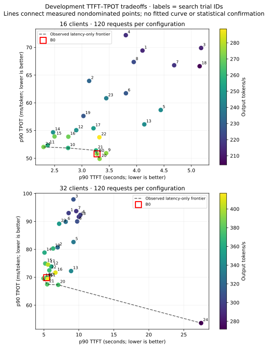
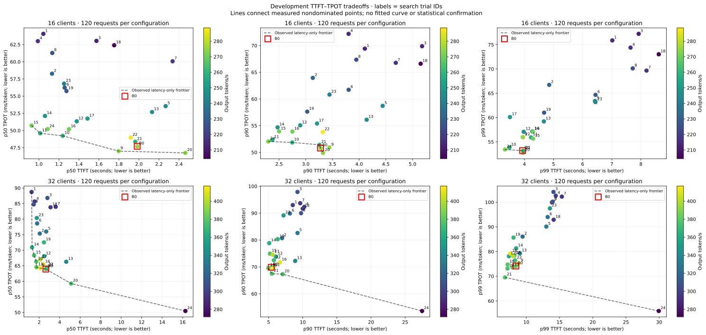
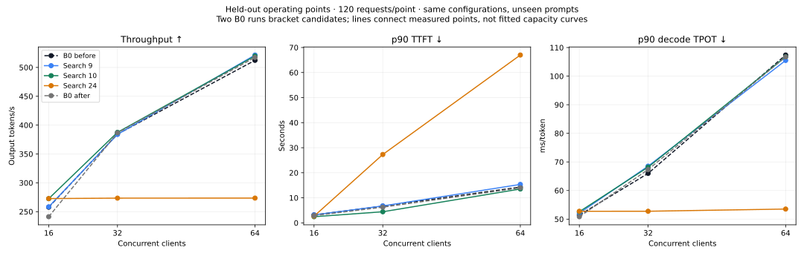
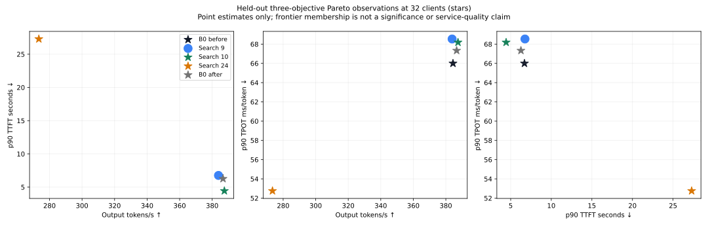

Development and all-run diagnostics: p50/p90/p99, class metrics and exploratory frontiers





Fresh baseline and same-workload comparisons. Exploratory observed frontier; no confirmed SLA capacity or production-quality claim.
Search findings, exact configurations and confirmation status
Side-by-side development, held-out and baseline comparison
Raw requests, logs, databases and reproducibility archive


TPOT means (last token − first token)/(output tokens − 1), called inter_token_latency_ms by GuideLLM.


| phase | trial | concurrency | validated | output_tok_s | requests_s | wall_seconds | native | trial_state | source_search_trial | parameters | prefix_queried_tokens | prefix_hit_tokens | prefix_hit_fraction | preemptions | successful | errored | incomplete | ttft_native_p90_ms | ttft_p50_ms | ttft_p90_ms | ttft_p99_ms | tpot_native_p90_ms | tpot_p50_ms | tpot_p90_ms | tpot_p99_ms | all_classes_observed_target_pass | observed_pareto | output_tok_s_change_vs_matched_b0_pct | ttft_p90_ms_change_vs_matched_b0_pct | tpot_p90_ms_change_vs_matched_b0_pct |
|---|---|---|---|---|---|---|---|---|---|---|---|---|---|---|---|---|---|---|---|---|---|---|---|---|---|---|---|---|---|---|
| calibration | trial_0 | 1 | True | 26.315585482083723 | 0.08165905843888596 | 107.99748921394348 | .artifacts/optuna-direct-v1/calibration/trial_0/c1-window0/guidellm.json | COMPLETE | {"async_scheduling": true, "dtype": "bfloat16", "enable_chunked_prefill": true, "enable_prefix_caching": true, "enforce_eager": false, "gpu_memory_utilization": 0.92, "long_prefill_token_threshold": 0, "max_cudagraph_capture_size": 512, "max_model_len": 40960, "max_num_batched_tokens": 8192, "max_num_seqs": 512, "reasoning_parser": "qwen3", "tensor_parallel_size": 1} | 22510.0 | 9408.0 | 0.41794757885384276 | 0.0 | 8 | 0 | 0 | 688.643217086792 | 158.9205265045166 | 687.7673625946045 | 688.5556316375732 | 37.777124666700175 | 37.470496362728824 | 37.77760402829039 | 37.77861068762985 | False | False | 0.0 | 0.0 | 0.0 | |
| calibration | trial_0 | 16 | True | 199.61387068092364 | 0.5520662447798953 | 78.22231364250183 | .artifacts/optuna-direct-v1/calibration/trial_0/c16-window3/guidellm.json | COMPLETE | {"async_scheduling": true, "dtype": "bfloat16", "enable_chunked_prefill": true, "enable_prefix_caching": true, "enforce_eager": false, "gpu_memory_utilization": 0.92, "long_prefill_token_threshold": 0, "max_cudagraph_capture_size": 512, "max_model_len": 40960, "max_num_batched_tokens": 8192, "max_num_seqs": 512, "reasoning_parser": "qwen3", "tensor_parallel_size": 1} | 107428.0 | 42336.0 | 0.39408720259150315 | 0.0 | 40 | 0 | 0 | 3760.5795860290527 | 2015.8652067184448 | 3760.614585876465 | 4012.646551132202 | 51.08004831800274 | 46.208068815929316 | 51.08081088346594 | 54.50462481554817 | False | False | 0.0 | 0.0 | 0.0 | |
| calibration | trial_0 | 32 | True | 339.9441342195821 | 0.9062745978514293 | 49.836334466934204 | .artifacts/optuna-direct-v1/calibration/trial_0/c32-window4/guidellm.json | COMPLETE | {"async_scheduling": true, "dtype": "bfloat16", "enable_chunked_prefill": true, "enable_prefix_caching": true, "enforce_eager": false, "gpu_memory_utilization": 0.92, "long_prefill_token_threshold": 0, "max_cudagraph_capture_size": 512, "max_model_len": 40960, "max_num_batched_tokens": 8192, "max_num_seqs": 512, "reasoning_parser": "qwen3", "tensor_parallel_size": 1} | 107428.0 | 42336.0 | 0.39408720259150315 | 0.0 | 40 | 0 | 0 | 8471.397161483765 | 4951.260924339294 | 8471.40748500824 | 8528.784239292145 | 65.25473220675599 | 54.09592039444867 | 69.48026890848197 | 72.29040857389862 | False | False | 0.0 | 0.0 | 0.0 | |
| calibration | trial_0 | 4 | True | 88.60500584636873 | 0.24596214761800073 | 168.44103837013245 | .artifacts/optuna-direct-v1/calibration/trial_0/c4-window1/guidellm.json | COMPLETE | {"async_scheduling": true, "dtype": "bfloat16", "enable_chunked_prefill": true, "enable_prefix_caching": true, "enforce_eager": false, "gpu_memory_utilization": 0.92, "long_prefill_token_threshold": 0, "max_cudagraph_capture_size": 512, "max_model_len": 40960, "max_num_batched_tokens": 8192, "max_num_seqs": 512, "reasoning_parser": "qwen3", "tensor_parallel_size": 1} | 107428.0 | 42336.0 | 0.39408720259150315 | 0.0 | 40 | 0 | 0 | 1200.1020908355713 | 763.2628679275513 | 1200.1151323318481 | 1587.9169178009033 | 41.44468027002671 | 40.28897799697577 | 41.39170098856402 | 42.22315757186162 | False | False | 0.0 | 0.0 | 0.0 | |
| calibration | trial_0 | 8 | True | 157.8559421692492 | 0.43738780236151026 | 97.19891691207886 | .artifacts/optuna-direct-v1/calibration/trial_0/c8-window2/guidellm.json | COMPLETE | {"async_scheduling": true, "dtype": "bfloat16", "enable_chunked_prefill": true, "enable_prefix_caching": true, "enforce_eager": false, "gpu_memory_utilization": 0.92, "long_prefill_token_threshold": 0, "max_cudagraph_capture_size": 512, "max_model_len": 40960, "max_num_batched_tokens": 8192, "max_num_seqs": 512, "reasoning_parser": "qwen3", "tensor_parallel_size": 1} | 107428.0 | 42336.0 | 0.39408720259150315 | 0.0 | 40 | 0 | 0 | 2004.3511390686035 | 1270.8135843276978 | 2004.3565034866333 | 2029.907054901123 | 43.26152848170928 | 41.84078328749713 | 43.270420887067615 | 44.83882230870864 | False | False | 0.0 | 0.0 | 0.0 | |
| confirmation | trial_0 | 16 | True | 257.73327726280974 | 0.7100192010667912 | 184.98051691055298 | .artifacts/optuna-direct-v1/confirmation/trial_0/c16-window0/guidellm.json | COMPLETE | 0 | {"async_scheduling": true, "dtype": "bfloat16", "enable_chunked_prefill": true, "enable_prefix_caching": true, "enforce_eager": false, "gpu_memory_utilization": 0.92, "long_prefill_token_threshold": 0, "max_cudagraph_capture_size": 512, "max_model_len": 40960, "max_num_batched_tokens": 8192, "max_num_seqs": 512, "reasoning_parser": "qwen3", "tensor_parallel_size": 1} | 322284.0 | 123088.0 | 0.3819240173263333 | 0.0 | 120 | 0 | 0 | 3179.6090602874756 | 1509.5611810684204 | 3178.5582780838013 | 3897.399952411652 | 51.414643715039155 | 47.99292395492822 | 51.41893482954768 | 55.485395609163774 | False | False | 0.0 | 0.0 | 0.0 |
| confirmation | trial_0 | 32 | True | 384.39224350595106 | 1.0543909352548617 | 119.69852066040039 | .artifacts/optuna-direct-v1/confirmation/trial_0/c32-window1/guidellm.json | COMPLETE | 0 | {"async_scheduling": true, "dtype": "bfloat16", "enable_chunked_prefill": true, "enable_prefix_caching": true, "enforce_eager": false, "gpu_memory_utilization": 0.92, "long_prefill_token_threshold": 0, "max_cudagraph_capture_size": 512, "max_model_len": 40960, "max_num_batched_tokens": 8192, "max_num_seqs": 512, "reasoning_parser": "qwen3", "tensor_parallel_size": 1} | 322284.0 | 117600.0 | 0.3648955579550955 | 0.0 | 120 | 0 | 0 | 6697.58939743042 | 3260.791778564453 | 6696.704268455505 | 7543.212535381317 | 65.99837599901771 | 62.237021741101884 | 65.99798631761406 | 70.07286549549477 | False | False | 0.0 | 0.0 | 0.0 |
| confirmation | trial_0 | 64 | True | 512.307973805598 | 1.4184112607942372 | 90.40900826454163 | .artifacts/optuna-direct-v1/confirmation/trial_0/c64-window2/guidellm.json | COMPLETE | 0 | {"async_scheduling": true, "dtype": "bfloat16", "enable_chunked_prefill": true, "enable_prefix_caching": true, "enforce_eager": false, "gpu_memory_utilization": 0.92, "long_prefill_token_threshold": 0, "max_cudagraph_capture_size": 512, "max_model_len": 40960, "max_num_batched_tokens": 8192, "max_num_seqs": 512, "reasoning_parser": "qwen3", "tensor_parallel_size": 1} | 322284.0 | 120736.0 | 0.3746261061672314 | 0.0 | 120 | 0 | 0 | 15360.204458236694 | 3177.247643470764 | 14288.037323951732 | 17005.183129310608 | 105.24476950882466 | 92.59433255613337 | 107.38404002844119 | 117.20066892399508 | False | False | 0.0 | 0.0 | 0.0 |
| confirmation | trial_1 | 16 | True | 258.3369966778919 | 0.7116467881298096 | 179.17154240608215 | .artifacts/optuna-direct-v1/confirmation/trial_1/c16-window0/guidellm.json | COMPLETE | 9 | {"async_scheduling": true, "dtype": "bfloat16", "enable_chunked_prefill": true, "enable_prefix_caching": true, "enforce_eager": false, "gpu_memory_utilization": 0.92, "long_prefill_token_threshold": 0, "max_cudagraph_capture_size": 512, "max_model_len": 40960, "max_num_batched_tokens": 8192, "max_num_seqs": 64, "reasoning_parser": "qwen3", "tensor_parallel_size": 1} | 322284.0 | 127008.0 | 0.39408720259150315 | 0.0 | 120 | 0 | 0 | 3177.0308017730713 | 1712.0815515518188 | 3175.1092672348022 | 3687.1339774131775 | 52.07043161579207 | 48.36806830237893 | 52.0736624212826 | 55.942210889330106 | False | False | 0.23424193472174615 | -0.10850865541085497 | 1.2733200209326112 |
| confirmation | trial_1 | 32 | True | 383.86288254696495 | 1.0649006316164638 | 118.45518660545349 | .artifacts/optuna-direct-v1/confirmation/trial_1/c32-window1/guidellm.json | COMPLETE | 9 | {"async_scheduling": true, "dtype": "bfloat16", "enable_chunked_prefill": true, "enable_prefix_caching": true, "enforce_eager": false, "gpu_memory_utilization": 0.92, "long_prefill_token_threshold": 0, "max_cudagraph_capture_size": 512, "max_model_len": 40960, "max_num_batched_tokens": 8192, "max_num_seqs": 64, "reasoning_parser": "qwen3", "tensor_parallel_size": 1} | 322284.0 | 124656.0 | 0.38678929143240126 | 0.0 | 120 | 0 | 0 | 6760.568380355835 | 2786.0445976257324 | 6759.418249130249 | 8198.34272146225 | 67.19440909981027 | 62.6878116645065 | 68.53421491735122 | 72.32698922998766 | False | False | -0.13771374629153454 | 0.9364902220657223 | 3.8428878534741973 |
| confirmation | trial_1 | 64 | True | 521.4774456656705 | 1.4217192936179583 | 90.21164035797119 | .artifacts/optuna-direct-v1/confirmation/trial_1/c64-window2/guidellm.json | COMPLETE | 9 | {"async_scheduling": true, "dtype": "bfloat16", "enable_chunked_prefill": true, "enable_prefix_caching": true, "enforce_eager": false, "gpu_memory_utilization": 0.92, "long_prefill_token_threshold": 0, "max_cudagraph_capture_size": 512, "max_model_len": 40960, "max_num_batched_tokens": 8192, "max_num_seqs": 64, "reasoning_parser": "qwen3", "tensor_parallel_size": 1} | 322284.0 | 120736.0 | 0.3746261061672314 | 0.0 | 120 | 0 | 0 | 15351.454973220825 | 3610.9660863876343 | 15350.513410568237 | 17190.417652130127 | 103.61884344813875 | 89.7696345039351 | 105.48662337936273 | 117.57707611719768 | False | False | 1.7898358661019076 | 7.436123398386041 | -1.7669447420453954 |
| confirmation | trial_2 | 16 | True | 272.5064822442434 | 0.7588009956463754 | 169.56151342391968 | .artifacts/optuna-direct-v1/confirmation/trial_2/c16-window0/guidellm.json | COMPLETE | 10 | {"async_scheduling": true, "dtype": "bfloat16", "enable_chunked_prefill": true, "enable_prefix_caching": true, "enforce_eager": false, "gpu_memory_utilization": 0.95, "long_prefill_token_threshold": 0, "max_cudagraph_capture_size": 512, "max_model_len": 40960, "max_num_batched_tokens": 4096, "max_num_seqs": 64, "reasoning_parser": "qwen3", "tensor_parallel_size": 1} | 322284.0 | 127008.0 | 0.39408720259150315 | 0.0 | 120 | 0 | 0 | 2456.725597381592 | 1197.742223739624 | 2455.8318853378296 | 2945.9839153289795 | 52.70443410556144 | 49.685345444024776 | 52.600380560052784 | 54.993524093253946 | False | False | 5.731974209278956 | -22.737553617600128 | 2.2976861236460033 |
| confirmation | trial_2 | 32 | True | 387.48335009558673 | 1.0779367814183283 | 117.2008113861084 | .artifacts/optuna-direct-v1/confirmation/trial_2/c32-window1/guidellm.json | COMPLETE | 10 | {"async_scheduling": true, "dtype": "bfloat16", "enable_chunked_prefill": true, "enable_prefix_caching": true, "enforce_eager": false, "gpu_memory_utilization": 0.95, "long_prefill_token_threshold": 0, "max_cudagraph_capture_size": 512, "max_model_len": 40960, "max_num_batched_tokens": 4096, "max_num_seqs": 64, "reasoning_parser": "qwen3", "tensor_parallel_size": 1} | 322284.0 | 126224.0 | 0.39165456553846917 | 0.0 | 120 | 0 | 0 | 4960.029602050781 | 1687.6604557037354 | 4436.96043491364 | 7330.3342843055725 | 68.1802983853215 | 65.68535125876309 | 68.18030006498273 | 71.89876925711538 | False | False | 0.8041542569752202 | -33.74411864334934 | 3.3066368674739888 |
| confirmation | trial_2 | 64 | True | 519.8132015669402 | 1.4295668299275295 | 89.76136255264282 | .artifacts/optuna-direct-v1/confirmation/trial_2/c64-window2/guidellm.json | COMPLETE | 10 | {"async_scheduling": true, "dtype": "bfloat16", "enable_chunked_prefill": true, "enable_prefix_caching": true, "enforce_eager": false, "gpu_memory_utilization": 0.95, "long_prefill_token_threshold": 0, "max_cudagraph_capture_size": 512, "max_model_len": 40960, "max_num_batched_tokens": 4096, "max_num_seqs": 64, "reasoning_parser": "qwen3", "tensor_parallel_size": 1} | 322284.0 | 120736.0 | 0.3746261061672314 | 0.0 | 120 | 0 | 0 | 14033.720254898071 | 2851.784586906433 | 13522.659230232244 | 17297.89956331253 | 106.78368398587997 | 94.87490157869541 | 106.78396766199758 | 116.53612370584526 | False | False | 1.4649835928944865 | -5.35677557642188 | -0.5588096390158892 |
| confirmation | trial_3 | 16 | True | 272.66191407844804 | 0.7590554758666401 | 169.31425881385803 | .artifacts/optuna-direct-v1/confirmation/trial_3/c16-window0/guidellm.json | COMPLETE | 24 | {"async_scheduling": true, "dtype": "bfloat16", "enable_chunked_prefill": true, "enable_prefix_caching": true, "enforce_eager": false, "gpu_memory_utilization": 0.95, "long_prefill_token_threshold": 4096, "max_cudagraph_capture_size": 128, "max_model_len": 40960, "max_num_batched_tokens": 4096, "max_num_seqs": 16, "reasoning_parser": "qwen3", "tensor_parallel_size": 1} | 322284.0 | 127008.0 | 0.39408720259150315 | 0.0 | 120 | 0 | 0 | 2665.7731533050537 | 958.1043720245361 | 2665.7572746276855 | 4142.606048583984 | 52.67132123311361 | 49.98498653479052 | 52.73938337961833 | 56.72028878155877 | False | False | 5.79228145243178 | -16.13313202378214 | 2.5680200386256624 |
| confirmation | trial_3 | 32 | True | 273.42932649578677 | 0.761052943919804 | 163.51158118247986 | .artifacts/optuna-direct-v1/confirmation/trial_3/c32-window1/guidellm.json | COMPLETE | 24 | {"async_scheduling": true, "dtype": "bfloat16", "enable_chunked_prefill": true, "enable_prefix_caching": true, "enforce_eager": false, "gpu_memory_utilization": 0.95, "long_prefill_token_threshold": 4096, "max_cudagraph_capture_size": 128, "max_model_len": 40960, "max_num_batched_tokens": 4096, "max_num_seqs": 16, "reasoning_parser": "qwen3", "tensor_parallel_size": 1} | 322284.0 | 127008.0 | 0.39408720259150315 | 0.0 | 120 | 0 | 0 | 27342.46873855591 | 16186.436533927917 | 27292.308855056763 | 28877.821469306946 | 52.73303500360239 | 50.45118793816016 | 52.75554270953092 | 55.63475074955061 | False | False | -28.86710616168986 | 307.54836649448345 | -20.064920684631392 |
| confirmation | trial_3 | 64 | True | 273.51909575241825 | 0.7615180274790072 | 163.35547161102295 | .artifacts/optuna-direct-v1/confirmation/trial_3/c64-window2/guidellm.json | COMPLETE | 24 | {"async_scheduling": true, "dtype": "bfloat16", "enable_chunked_prefill": true, "enable_prefix_caching": true, "enforce_eager": false, "gpu_memory_utilization": 0.95, "long_prefill_token_threshold": 4096, "max_cudagraph_capture_size": 128, "max_model_len": 40960, "max_num_batched_tokens": 4096, "max_num_seqs": 16, "reasoning_parser": "qwen3", "tensor_parallel_size": 1} | 322284.0 | 127008.0 | 0.39408720259150315 | 0.0 | 120 | 0 | 0 | 67085.91651916504 | 55087.440490722656 | 66993.75603199005 | 68746.27193450928 | 53.422771554637094 | 50.35691775527655 | 53.52496476940227 | 55.21190730263205 | False | False | -46.61041605098875 | 368.88004638457346 | -50.15556803857826 |
| confirmation | trial_4 | 16 | True | 241.23119169136163 | 0.6707332953375518 | 188.33385396003723 | .artifacts/optuna-direct-v1/confirmation/trial_4/c16-window0/guidellm.json | COMPLETE | 0 | {"async_scheduling": true, "dtype": "bfloat16", "enable_chunked_prefill": true, "enable_prefix_caching": true, "enforce_eager": false, "gpu_memory_utilization": 0.92, "long_prefill_token_threshold": 0, "max_cudagraph_capture_size": 512, "max_model_len": 40960, "max_num_batched_tokens": 8192, "max_num_seqs": 512, "reasoning_parser": "qwen3", "tensor_parallel_size": 1} | 322284.0 | 123088.0 | 0.3819240173263333 | 0.0 | 120 | 0 | 0 | 2970.6971645355225 | 1712.7341032028198 | 2892.7950859069833 | 3617.1966981887817 | 50.83701661888168 | 48.16533329069585 | 50.843047862416846 | 52.665209480360446 | False | False | -6.40277644652808 | -8.990339870348096 | -1.1199900757179915 |
| confirmation | trial_4 | 32 | True | 386.6526448489772 | 1.0602949876643366 | 118.99821066856384 | .artifacts/optuna-direct-v1/confirmation/trial_4/c32-window1/guidellm.json | COMPLETE | 0 | {"async_scheduling": true, "dtype": "bfloat16", "enable_chunked_prefill": true, "enable_prefix_caching": true, "enforce_eager": false, "gpu_memory_utilization": 0.92, "long_prefill_token_threshold": 0, "max_cudagraph_capture_size": 512, "max_model_len": 40960, "max_num_batched_tokens": 8192, "max_num_seqs": 512, "reasoning_parser": "qwen3", "tensor_parallel_size": 1} | 322284.0 | 120736.0 | 0.3746261061672314 | 0.0 | 120 | 0 | 0 | 6419.3408489227295 | 2764.1000747680664 | 6263.104534149172 | 7119.708302021027 | 67.41674273621803 | 61.988918515334156 | 67.33376398075936 | 71.2695789929431 | False | False | 0.5880455137204477 | -6.4748227922917785 | 2.023967302149021 |
| confirmation | trial_4 | 64 | True | 517.3617130052182 | 1.41100948721005 | 90.86131834983826 | .artifacts/optuna-direct-v1/confirmation/trial_4/c64-window2/guidellm.json | COMPLETE | 0 | {"async_scheduling": true, "dtype": "bfloat16", "enable_chunked_prefill": true, "enable_prefix_caching": true, "enforce_eager": false, "gpu_memory_utilization": 0.92, "long_prefill_token_threshold": 0, "max_cudagraph_capture_size": 512, "max_model_len": 40960, "max_num_batched_tokens": 8192, "max_num_seqs": 512, "reasoning_parser": "qwen3", "tensor_parallel_size": 1} | 322284.0 | 116816.0 | 0.36246292090206156 | 0.0 | 120 | 0 | 0 | 13984.884262084961 | 4076.1646032333374 | 13984.83898639679 | 16395.770468711853 | 105.28680443063874 | 93.0520497116388 | 106.70661187639423 | 114.25848499933879 | False | False | 0.9864650675021513 | -2.122043291745024 | -0.630846215012526 |
| search | trial_0 | 16 | True | 275.15503345016214 | 0.7559585921701439 | 174.6957550048828 | .artifacts/optuna-direct-v1/search/trial_0/c16-window0/guidellm.json | COMPLETE | {"async_scheduling": true, "dtype": "bfloat16", "enable_chunked_prefill": true, "enable_prefix_caching": true, "enforce_eager": false, "gpu_memory_utilization": 0.92, "long_prefill_token_threshold": 0, "max_cudagraph_capture_size": 512, "max_model_len": 40960, "max_num_batched_tokens": 8192, "max_num_seqs": 512, "reasoning_parser": "qwen3", "tensor_parallel_size": 1} | 322284.0 | 123872.0 | 0.3843566543793673 | 0.0 | 120 | 0 | 0 | 3438.71808052063 | 1983.0342531204224 | 3276.1466026306166 | 3939.782829284668 | 50.963868833568 | 47.69207376789907 | 50.79878556765414 | 53.185081463490256 | False | False | 0.0 | 0.0 | 0.0 | |
| search | trial_0 | 32 | True | 378.85641988222966 | 1.0511495052448483 | 120.12705969810486 | .artifacts/optuna-direct-v1/search/trial_0/c32-window1/guidellm.json | COMPLETE | {"async_scheduling": true, "dtype": "bfloat16", "enable_chunked_prefill": true, "enable_prefix_caching": true, "enforce_eager": false, "gpu_memory_utilization": 0.92, "long_prefill_token_threshold": 0, "max_cudagraph_capture_size": 512, "max_model_len": 40960, "max_num_batched_tokens": 8192, "max_num_seqs": 512, "reasoning_parser": "qwen3", "tensor_parallel_size": 1} | 322284.0 | 112112.0 | 0.3478670985838577 | 0.0 | 120 | 0 | 0 | 5388.662099838257 | 2652.305841445923 | 5388.318991661072 | 8430.706651210785 | 69.4361733455284 | 63.92977498982051 | 69.86003857032925 | 74.13045954236797 | False | True | 0.0 | 0.0 | 0.0 | |
| search | trial_1 | 16 | True | 213.78199434385823 | 0.5924893998929756 | 212.44506692886353 | .artifacts/optuna-direct-v1/search/trial_1/c16-window0/guidellm.json | COMPLETE | {"async_scheduling": false, "dtype": "bfloat16", "enable_chunked_prefill": true, "enable_prefix_caching": false, "enforce_eager": true, "gpu_memory_utilization": 0.85, "long_prefill_token_threshold": 2048, "max_model_len": 40960, "max_num_batched_tokens": 2048, "max_num_seqs": 256, "reasoning_parser": "qwen3", "tensor_parallel_size": 1} | 0.0 | 0.0 | None | 0.0 | 120 | 0 | 0 | 4338.047504425049 | 1044.6052551269531 | 4107.169389724733 | 7017.178263664246 | 69.29772320915671 | 64.05637216130695 | 69.42485608151061 | 75.89050606185315 | False | False | -22.30489420336924 | 25.365860808146934 | 36.66636968919297 | |
| search | trial_1 | 32 | True | 299.06732334408485 | 0.833694411019311 | 149.7662477493286 | .artifacts/optuna-direct-v1/search/trial_1/c32-window1/guidellm.json | COMPLETE | {"async_scheduling": false, "dtype": "bfloat16", "enable_chunked_prefill": true, "enable_prefix_caching": false, "enforce_eager": true, "gpu_memory_utilization": 0.85, "long_prefill_token_threshold": 2048, "max_model_len": 40960, "max_num_batched_tokens": 2048, "max_num_seqs": 256, "reasoning_parser": "qwen3", "tensor_parallel_size": 1} | 0.0 | 0.0 | None | 0.0 | 120 | 0 | 0 | 8838.005065917969 | 1258.908748626709 | 8539.424777030948 | 13856.461253166199 | 92.63357957515231 | 88.72972609950047 | 92.98708280128838 | 99.91572234209846 | False | False | -21.060510618494423 | 58.48031251020045 | 33.10482602679463 | |
| search | trial_10 | 16 | True | 258.09681725298174 | 0.7158640187187433 | 178.2499704360962 | .artifacts/optuna-direct-v1/search/trial_10/c16-window0/guidellm.json | COMPLETE | {"async_scheduling": true, "dtype": "bfloat16", "enable_chunked_prefill": true, "enable_prefix_caching": true, "enforce_eager": false, "gpu_memory_utilization": 0.95, "long_prefill_token_threshold": 0, "max_cudagraph_capture_size": 512, "max_model_len": 40960, "max_num_batched_tokens": 4096, "max_num_seqs": 64, "reasoning_parser": "qwen3", "tensor_parallel_size": 1} | 322284.0 | 125440.0 | 0.3892219284854352 | 0.0 | 120 | 0 | 0 | 3207.8206539154053 | 1238.121747970581 | 2746.941184997563 | 3483.4339714050293 | 51.86092456959465 | 49.22873644409613 | 51.86121417118379 | 53.81991171369366 | False | False | -6.199492694459496 | -16.153288659552732 | 2.0914448872300317 | |
| search | trial_10 | 32 | True | 378.6633328421945 | 1.053506634921593 | 119.72926712036133 | .artifacts/optuna-direct-v1/search/trial_10/c32-window1/guidellm.json | COMPLETE | {"async_scheduling": true, "dtype": "bfloat16", "enable_chunked_prefill": true, "enable_prefix_caching": true, "enforce_eager": false, "gpu_memory_utilization": 0.95, "long_prefill_token_threshold": 0, "max_cudagraph_capture_size": 512, "max_model_len": 40960, "max_num_batched_tokens": 4096, "max_num_seqs": 64, "reasoning_parser": "qwen3", "tensor_parallel_size": 1} | 322284.0 | 108192.0 | 0.3357039133186879 | 0.0 | 120 | 0 | 0 | 5477.995157241821 | 1708.650827407837 | 4953.278470039372 | 7184.394476413728 | 69.59477499419567 | 66.36557745359923 | 69.60137183364054 | 74.76375800488042 | False | True | -0.05096575639266243 | -8.073770730629825 | -0.3702642340059792 | |
| search | trial_11 | 16 | True | 257.610823247774 | 0.7173904966522785 | 179.95375800132751 | .artifacts/optuna-direct-v1/search/trial_11/c16-window0/guidellm.json | COMPLETE | {"async_scheduling": true, "dtype": "bfloat16", "enable_chunked_prefill": true, "enable_prefix_caching": true, "enforce_eager": false, "gpu_memory_utilization": 0.95, "long_prefill_token_threshold": 0, "max_cudagraph_capture_size": 512, "max_model_len": 40960, "max_num_batched_tokens": 4096, "max_num_seqs": 64, "reasoning_parser": "qwen3", "tensor_parallel_size": 1} | 322284.0 | 127008.0 | 0.39408720259150315 | 0.0 | 120 | 0 | 0 | 3063.488721847534 | 1012.9766464233398 | 2373.2321023941104 | 4227.790966033936 | 52.29633929682713 | 49.59667944440655 | 52.33934355717079 | 55.913895373250924 | False | False | -6.376118213213 | -27.560259345888294 | 3.0326669669394457 | |
| search | trial_11 | 32 | True | 380.94633867160303 | 1.0592954141521824 | 119.08281636238098 | .artifacts/optuna-direct-v1/search/trial_11/c32-window1/guidellm.json | COMPLETE | {"async_scheduling": true, "dtype": "bfloat16", "enable_chunked_prefill": true, "enable_prefix_caching": true, "enforce_eager": false, "gpu_memory_utilization": 0.95, "long_prefill_token_threshold": 0, "max_cudagraph_capture_size": 512, "max_model_len": 40960, "max_num_batched_tokens": 4096, "max_num_seqs": 64, "reasoning_parser": "qwen3", "tensor_parallel_size": 1} | 322284.0 | 112112.0 | 0.3478670985838577 | 0.0 | 120 | 0 | 0 | 5668.678760528564 | 1729.2680740356445 | 5668.298316001892 | 7932.665214538574 | 68.78387039782955 | 64.55562703420367 | 69.62335427602132 | 73.56245854321648 | False | False | 0.5516387421976576 | 5.196042119520294 | -0.33879782941954595 | |
| search | trial_12 | 16 | True | 247.54295407885428 | 0.6847960388721154 | 185.90721678733826 | .artifacts/optuna-direct-v1/search/trial_12/c16-window0/guidellm.json | COMPLETE | {"async_scheduling": false, "dtype": "bfloat16", "enable_chunked_prefill": true, "enable_prefix_caching": true, "enforce_eager": false, "gpu_memory_utilization": 0.92, "long_prefill_token_threshold": 2048, "max_cudagraph_capture_size": 128, "max_model_len": 40960, "max_num_batched_tokens": 8192, "max_num_seqs": 64, "reasoning_parser": "qwen3", "tensor_parallel_size": 1} | 322284.0 | 116816.0 | 0.36246292090206156 | 0.0 | 120 | 0 | 0 | 2924.262285232544 | 1378.4116506576538 | 2896.3606595993047 | 3977.495346069336 | 54.95614538005754 | 51.33979707781349 | 55.07088446149639 | 57.06422512204039 | False | False | -10.035098767803985 | -11.592458735709776 | 8.409844538808198 | |
| search | trial_12 | 32 | True | 358.21823137362463 | 0.998483081483332 | 125.9843373298645 | .artifacts/optuna-direct-v1/search/trial_12/c32-window1/guidellm.json | COMPLETE | {"async_scheduling": false, "dtype": "bfloat16", "enable_chunked_prefill": true, "enable_prefix_caching": true, "enforce_eager": false, "gpu_memory_utilization": 0.92, "long_prefill_token_threshold": 2048, "max_cudagraph_capture_size": 128, "max_model_len": 40960, "max_num_batched_tokens": 8192, "max_num_seqs": 64, "reasoning_parser": "qwen3", "tensor_parallel_size": 1} | 322284.0 | 95648.0 | 0.29678172047014434 | 0.0 | 120 | 0 | 0 | 6070.015668869019 | 2480.178117752075 | 6067.2152280807495 | 7378.403339385986 | 73.89967828814065 | 68.08236643759471 | 73.86116669616312 | 78.11786285644618 | False | False | -5.44749605009216 | 12.599406929514245 | 5.72734886455275 | |
| search | trial_13 | 16 | True | 245.18607367999692 | 0.6627611105824853 | 192.61890411376953 | .artifacts/optuna-direct-v1/search/trial_13/c16-window0/guidellm.json | COMPLETE | {"async_scheduling": true, "dtype": "bfloat16", "enable_chunked_prefill": true, "enable_prefix_caching": true, "enforce_eager": true, "gpu_memory_utilization": 0.92, "long_prefill_token_threshold": 0, "max_model_len": 40960, "max_num_batched_tokens": 16384, "max_num_seqs": 64, "reasoning_parser": "qwen3", "tensor_parallel_size": 1} | 322284.0 | 124656.0 | 0.38678929143240126 | 0.0 | 120 | 0 | 0 | 4141.178846359253 | 2131.182074546814 | 4140.614080429077 | 4668.661777973176 | 56.09204811126052 | 52.68497973500958 | 56.11528631759016 | 59.20096698461795 | False | False | -10.891663290467623 | 26.386715329049302 | 10.465802854392003 | |
| search | trial_13 | 32 | True | 339.61198144605356 | 0.9315428243828978 | 134.6952497959137 | .artifacts/optuna-direct-v1/search/trial_13/c32-window1/guidellm.json | COMPLETE | {"async_scheduling": true, "dtype": "bfloat16", "enable_chunked_prefill": true, "enable_prefix_caching": true, "enforce_eager": true, "gpu_memory_utilization": 0.92, "long_prefill_token_threshold": 0, "max_model_len": 40960, "max_num_batched_tokens": 16384, "max_num_seqs": 64, "reasoning_parser": "qwen3", "tensor_parallel_size": 1} | 322284.0 | 111328.0 | 0.34543446153082374 | 0.0 | 120 | 0 | 0 | 8894.181489944458 | 4642.341613769531 | 8892.435264587402 | 9038.136506080627 | 72.20993489901846 | 66.2949099260218 | 72.23480900206444 | 79.28858287661684 | False | False | -10.358657363751556 | 65.03171542644893 | 3.3993259670827003 | |
| search | trial_14 | 16 | True | 247.63232092286162 | 0.6860540698025615 | 185.40303897857666 | .artifacts/optuna-direct-v1/search/trial_14/c16-window0/guidellm.json | COMPLETE | {"async_scheduling": false, "dtype": "bfloat16", "enable_chunked_prefill": true, "enable_prefix_caching": true, "enforce_eager": false, "gpu_memory_utilization": 0.9, "long_prefill_token_threshold": 0, "max_cudagraph_capture_size": 32, "max_model_len": 40960, "max_num_batched_tokens": 4096, "max_num_seqs": 512, "reasoning_parser": "qwen3", "tensor_parallel_size": 1} | 322284.0 | 114464.0 | 0.3551650097429596 | 0.0 | 120 | 0 | 0 | 2976.114273071289 | 1060.6151819229126 | 2472.683167457585 | 4272.16588973999 | 54.50750799740062 | 52.114983127541734 | 54.691692520590394 | 57.13216775071387 | False | False | -10.002620043760025 | -24.524648394179984 | 7.663385865301153 | |
| search | trial_14 | 32 | True | 360.11706177838767 | 1.0038074868535338 | 125.3338930606842 | .artifacts/optuna-direct-v1/search/trial_14/c32-window1/guidellm.json | COMPLETE | {"async_scheduling": false, "dtype": "bfloat16", "enable_chunked_prefill": true, "enable_prefix_caching": true, "enforce_eager": false, "gpu_memory_utilization": 0.9, "long_prefill_token_threshold": 0, "max_cudagraph_capture_size": 32, "max_model_len": 40960, "max_num_batched_tokens": 4096, "max_num_seqs": 512, "reasoning_parser": "qwen3", "tensor_parallel_size": 1} | 322284.0 | 95648.0 | 0.29678172047014434 | 0.0 | 120 | 0 | 0 | 5566.916942596436 | 1306.0764074325562 | 5092.168092727666 | 8471.923253536224 | 78.57703229452532 | 70.92173380010269 | 78.83550447576187 | 81.3183072314543 | False | False | -4.946295514714327 | -5.4961649336597755 | 12.847782636702764 | |
| search | trial_15 | 16 | True | 270.561896561214 | 0.7505537404329881 | 170.2930188179016 | .artifacts/optuna-direct-v1/search/trial_15/c16-window0/guidellm.json | COMPLETE | {"async_scheduling": true, "dtype": "bfloat16", "enable_chunked_prefill": true, "enable_prefix_caching": true, "enforce_eager": false, "gpu_memory_utilization": 0.92, "long_prefill_token_threshold": 0, "max_cudagraph_capture_size": 512, "max_model_len": 40960, "max_num_batched_tokens": 2048, "max_num_seqs": 64, "reasoning_parser": "qwen3", "tensor_parallel_size": 1} | 322284.0 | 112112.0 | 0.3478670985838577 | 0.0 | 120 | 0 | 0 | 2727.7770042419434 | 927.1961450576782 | 2499.1379976272606 | 4298.66061449051 | 53.901217965518725 | 50.721836837518836 | 53.92918652179195 | 55.659157768360174 | False | False | -1.6692905200951347 | -23.71715003166979 | 6.16235392078166 | |
| search | trial_15 | 32 | True | 373.87513678288417 | 1.0410746493968577 | 121.23325490951538 | .artifacts/optuna-direct-v1/search/trial_15/c32-window1/guidellm.json | COMPLETE | {"async_scheduling": true, "dtype": "bfloat16", "enable_chunked_prefill": true, "enable_prefix_caching": true, "enforce_eager": false, "gpu_memory_utilization": 0.92, "long_prefill_token_threshold": 0, "max_cudagraph_capture_size": 512, "max_model_len": 40960, "max_num_batched_tokens": 2048, "max_num_seqs": 64, "reasoning_parser": "qwen3", "tensor_parallel_size": 1} | 322284.0 | 95648.0 | 0.29678172047014434 | 0.0 | 120 | 0 | 0 | 5470.449447631836 | 1500.9337663650513 | 5195.052671432498 | 8197.8888297081 | 74.24428924889014 | 68.35839076518079 | 74.92202911550407 | 78.32306590734744 | False | False | -1.3148208233857983 | -3.5867646389842855 | 7.245902877764432 | |
| search | trial_16 | 16 | True | 270.26441938140584 | 0.7453468235259622 | 173.49054670333862 | .artifacts/optuna-direct-v1/search/trial_16/c16-window0/guidellm.json | COMPLETE | {"async_scheduling": true, "dtype": "bfloat16", "enable_chunked_prefill": true, "enable_prefix_caching": true, "enforce_eager": false, "gpu_memory_utilization": 0.95, "long_prefill_token_threshold": 1024, "max_cudagraph_capture_size": 512, "max_model_len": 40960, "max_num_batched_tokens": 8192, "max_num_seqs": 64, "reasoning_parser": "qwen3", "tensor_parallel_size": 1} | 322284.0 | 108976.0 | 0.33813655037172186 | 0.0 | 120 | 0 | 0 | 2751.3082027435303 | 1300.6080389022827 | 2751.101565361023 | 4293.94721031189 | 53.84904624431334 | 50.19441118427351 | 53.89200790255677 | 57.07663048949896 | False | False | -1.777403090698726 | -16.026298604830536 | 6.089165912801309 | |
| search | trial_16 | 32 | True | 410.92483118227887 | 1.1260956730567446 | 112.37380814552307 | .artifacts/optuna-direct-v1/search/trial_16/c32-window1/guidellm.json | COMPLETE | {"async_scheduling": true, "dtype": "bfloat16", "enable_chunked_prefill": true, "enable_prefix_caching": true, "enforce_eager": false, "gpu_memory_utilization": 0.95, "long_prefill_token_threshold": 1024, "max_cudagraph_capture_size": 512, "max_model_len": 40960, "max_num_batched_tokens": 8192, "max_num_seqs": 64, "reasoning_parser": "qwen3", "tensor_parallel_size": 1} | 322284.0 | 97216.0 | 0.3016469945762123 | 0.0 | 120 | 0 | 0 | 7262.838125228882 | 2405.4720401763916 | 6655.365633964544 | 7589.250032901764 | 71.65708541870117 | 65.41757536869423 | 71.67415410805123 | 79.17707388073791 | False | False | 8.464528939490567 | 23.51469250919156 | 2.5967857660079474 | |
| search | trial_17 | 16 | True | 250.27589757339211 | 0.6968561283152321 | 182.6539227962494 | .artifacts/optuna-direct-v1/search/trial_17/c16-window0/guidellm.json | COMPLETE | {"async_scheduling": true, "dtype": "bfloat16", "enable_chunked_prefill": true, "enable_prefix_caching": true, "enforce_eager": false, "gpu_memory_utilization": 0.85, "long_prefill_token_threshold": 2048, "max_cudagraph_capture_size": 512, "max_model_len": 40960, "max_num_batched_tokens": 4096, "max_num_seqs": 256, "reasoning_parser": "qwen3", "tensor_parallel_size": 1} | 322284.0 | 95648.0 | 0.29678172047014434 | 0.0 | 120 | 0 | 0 | 3213.2604122161865 | 1485.733151435852 | 3211.4047527313232 | 3505.6679153442383 | 55.356834266050456 | 51.73487369328329 | 55.4099796555788 | 60.09679641910628 | False | False | -9.041861079120073 | -1.9761585103459156 | 9.077370721359944 | |
| search | trial_17 | 32 | True | 401.7495595642989 | 1.1174769316952302 | 113.21862888336182 | .artifacts/optuna-direct-v1/search/trial_17/c32-window1/guidellm.json | COMPLETE | {"async_scheduling": true, "dtype": "bfloat16", "enable_chunked_prefill": true, "enable_prefix_caching": true, "enforce_eager": false, "gpu_memory_utilization": 0.85, "long_prefill_token_threshold": 2048, "max_cudagraph_capture_size": 512, "max_model_len": 40960, "max_num_batched_tokens": 4096, "max_num_seqs": 256, "reasoning_parser": "qwen3", "tensor_parallel_size": 1} | 322284.0 | 87024.0 | 0.27002271288677065 | 0.0 | 120 | 0 | 0 | 5586.584568023682 | 2107.414126396179 | 5584.610891342163 | 8002.913796901703 | 73.58259277567704 | 66.98946906071083 | 74.55895489337398 | 78.16469709588041 | False | False | 6.042695459452885 | 3.6429153504993206 | 6.726186270730805 | |
| search | trial_18 | 16 | True | 204.28698052648042 | 0.5669942483488064 | 221.95601105690002 | .artifacts/optuna-direct-v1/search/trial_18/c16-window0/guidellm.json | COMPLETE | {"async_scheduling": true, "dtype": "bfloat16", "enable_chunked_prefill": true, "enable_prefix_caching": false, "enforce_eager": true, "gpu_memory_utilization": 0.95, "long_prefill_token_threshold": 0, "max_model_len": 40960, "max_num_batched_tokens": 8192, "max_num_seqs": 64, "reasoning_parser": "qwen3", "tensor_parallel_size": 1} | 0.0 | 0.0 | None | 0.0 | 120 | 0 | 0 | 5184.569597244263 | 1752.6416778564453 | 5152.368927001953 | 8612.558360099792 | 66.54174313853164 | 62.40083314814318 | 66.60375617817603 | 73.03196777081958 | False | False | -25.75568109188081 | 57.26918089882802 | 31.112890660491722 | |
| search | trial_18 | 32 | True | 295.8465749333247 | 0.8177157142178617 | 152.6334753036499 | .artifacts/optuna-direct-v1/search/trial_18/c32-window1/guidellm.json | COMPLETE | {"async_scheduling": true, "dtype": "bfloat16", "enable_chunked_prefill": true, "enable_prefix_caching": false, "enforce_eager": true, "gpu_memory_utilization": 0.95, "long_prefill_token_threshold": 0, "max_model_len": 40960, "max_num_batched_tokens": 8192, "max_num_seqs": 64, "reasoning_parser": "qwen3", "tensor_parallel_size": 1} | 0.0 | 0.0 | None | 0.0 | 120 | 0 | 0 | 11284.10530090332 | 3107.979893684387 | 10000.643825531019 | 14118.292989730835 | 91.56709127930046 | 83.80658394916843 | 91.65652864119585 | 92.90381207185634 | False | False | -21.910634370326676 | 85.59858540312761 | 31.20022621934815 | |
| search | trial_19 | 16 | True | 227.59741851765853 | 0.6333021830917677 | 202.23412704467773 | .artifacts/optuna-direct-v1/search/trial_19/c16-window0/guidellm.json | COMPLETE | {"async_scheduling": true, "dtype": "bfloat16", "enable_chunked_prefill": true, "enable_prefix_caching": true, "enforce_eager": true, "gpu_memory_utilization": 0.95, "long_prefill_token_threshold": 1024, "max_model_len": 40960, "max_num_batched_tokens": 4096, "max_num_seqs": 32, "reasoning_parser": "qwen3", "tensor_parallel_size": 1} | 322284.0 | 110544.0 | 0.34300182447778976 | 0.0 | 120 | 0 | 0 | 3069.823980331421 | 1275.7017612457275 | 3027.177715301514 | 4677.968318462373 | 57.62346710010984 | 55.739925798837916 | 57.627293827628776 | 61.01024080725277 | False | False | -17.283934201086517 | -7.599442806655543 | 13.442266746476417 | |
| search | trial_19 | 32 | True | 367.04733380506224 | 1.0191429602195539 | 123.58073472976685 | .artifacts/optuna-direct-v1/search/trial_19/c32-window1/guidellm.json | COMPLETE | {"async_scheduling": true, "dtype": "bfloat16", "enable_chunked_prefill": true, "enable_prefix_caching": true, "enforce_eager": true, "gpu_memory_utilization": 0.95, "long_prefill_token_threshold": 1024, "max_model_len": 40960, "max_num_batched_tokens": 4096, "max_num_seqs": 32, "reasoning_parser": "qwen3", "tensor_parallel_size": 1} | 322284.0 | 93296.0 | 0.28948380931104245 | 0.0 | 120 | 0 | 0 | 6330.373048782349 | 2464.3805027008057 | 6327.472829818726 | 8074.469268321991 | 79.87986919926662 | 72.53484071469774 | 80.30528952230914 | 85.67954305574007 | False | False | -3.11703470165251 | 17.429440231936578 | 14.951682200210193 | |
| search | trial_2 | 16 | True | 232.1695610422055 | 0.6423764584887007 | 199.6258533000946 | .artifacts/optuna-direct-v1/search/trial_2/c16-window0/guidellm.json | COMPLETE | {"async_scheduling": false, "dtype": "bfloat16", "enable_chunked_prefill": true, "enable_prefix_caching": true, "enforce_eager": true, "gpu_memory_utilization": 0.95, "long_prefill_token_threshold": 1024, "max_model_len": 40960, "max_num_batched_tokens": 8192, "max_num_seqs": 256, "reasoning_parser": "qwen3", "tensor_parallel_size": 1} | 322284.0 | 102704.0 | 0.31867545394745006 | 0.0 | 120 | 0 | 0 | 3182.7409267425537 | 1131.259799003601 | 3132.2392225265507 | 4850.471043586731 | 63.562649371577244 | 58.26129866581337 | 63.95119068669338 | 66.7289795034072 | False | False | -15.622273693838295 | -4.392580600285523 | 25.891180216351394 | |
| search | trial_2 | 32 | True | 322.16537390880336 | 0.8980369973311721 | 139.45275020599365 | .artifacts/optuna-direct-v1/search/trial_2/c32-window1/guidellm.json | COMPLETE | {"async_scheduling": false, "dtype": "bfloat16", "enable_chunked_prefill": true, "enable_prefix_caching": true, "enforce_eager": true, "gpu_memory_utilization": 0.95, "long_prefill_token_threshold": 1024, "max_model_len": 40960, "max_num_batched_tokens": 8192, "max_num_seqs": 256, "reasoning_parser": "qwen3", "tensor_parallel_size": 1} | 322284.0 | 95648.0 | 0.29678172047014434 | 0.0 | 120 | 0 | 0 | 6971.418619155884 | 2053.522825241089 | 6970.477914810181 | 9436.735880374908 | 80.55638147193625 | 75.34409878300686 | 80.70985205033247 | 86.06928499072207 | False | False | -14.963728472926274 | 29.36275535278532 | 15.530786558442177 | |
| search | trial_20 | 16 | True | 273.67086143618366 | 0.747787865427195 | 170.7912142276764 | .artifacts/optuna-direct-v1/search/trial_20/c16-window0/guidellm.json | COMPLETE | {"async_scheduling": true, "dtype": "bfloat16", "enable_chunked_prefill": true, "enable_prefix_caching": true, "enforce_eager": false, "gpu_memory_utilization": 0.9, "long_prefill_token_threshold": 0, "max_cudagraph_capture_size": 32, "max_model_len": 40960, "max_num_batched_tokens": 16384, "max_num_seqs": 128, "reasoning_parser": "qwen3", "tensor_parallel_size": 1} | 322284.0 | 122304.0 | 0.3794913802732993 | 0.0 | 120 | 0 | 0 | 3339.872121810913 | 2464.5283222198486 | 3322.758984565735 | 3952.3803997039795 | 49.96742007783714 | 46.74566540063596 | 49.90450374767505 | 52.71884325438855 | False | False | -0.5393948260253412 | 1.422780711268845 | -1.7604393687484565 | |
| search | trial_20 | 32 | True | 375.36886620097437 | 1.03656195540382 | 121.62874984741211 | .artifacts/optuna-direct-v1/search/trial_20/c32-window1/guidellm.json | COMPLETE | {"async_scheduling": true, "dtype": "bfloat16", "enable_chunked_prefill": true, "enable_prefix_caching": true, "enforce_eager": false, "gpu_memory_utilization": 0.9, "long_prefill_token_threshold": 0, "max_cudagraph_capture_size": 32, "max_model_len": 40960, "max_num_batched_tokens": 16384, "max_num_seqs": 128, "reasoning_parser": "qwen3", "tensor_parallel_size": 1} | 322284.0 | 106624.0 | 0.3308386392126199 | 0.0 | 120 | 0 | 0 | 7052.436113357544 | 5118.209958076477 | 7052.411651611328 | 7163.338723182678 | 67.29070532555674 | 59.287845617720045 | 67.2907834894517 | 73.14286495333673 | False | True | -0.9205476001540203 | 30.88333601862836 | -3.677717810434711 | |
| search | trial_21 | 16 | True | 257.968744263802 | 0.7105829422544456 | 181.75098514556885 | .artifacts/optuna-direct-v1/search/trial_21/c16-window0/guidellm.json | COMPLETE | {"async_scheduling": true, "dtype": "bfloat16", "enable_chunked_prefill": true, "enable_prefix_caching": true, "enforce_eager": false, "gpu_memory_utilization": 0.92, "long_prefill_token_threshold": 0, "max_cudagraph_capture_size": 32, "max_model_len": 40960, "max_num_batched_tokens": 8192, "max_num_seqs": 64, "reasoning_parser": "qwen3", "tensor_parallel_size": 1} | 322284.0 | 126224.0 | 0.39165456553846917 | 0.0 | 120 | 0 | 0 | 3258.8703632354736 | 1963.4852409362793 | 3257.4219703674316 | 3979.137599468231 | 51.22323932013166 | 48.36396675447259 | 51.421058247933885 | 53.13134328056784 | False | False | -6.246038449982782 | -0.5715443945075505 | 1.2249755054695166 | |
| search | trial_21 | 32 | True | 378.1684974928552 | 1.0492739070513766 | 120.28277897834778 | .artifacts/optuna-direct-v1/search/trial_21/c32-window1/guidellm.json | COMPLETE | {"async_scheduling": true, "dtype": "bfloat16", "enable_chunked_prefill": true, "enable_prefix_caching": true, "enforce_eager": false, "gpu_memory_utilization": 0.92, "long_prefill_token_threshold": 0, "max_cudagraph_capture_size": 32, "max_model_len": 40960, "max_num_batched_tokens": 8192, "max_num_seqs": 64, "reasoning_parser": "qwen3", "tensor_parallel_size": 1} | 322284.0 | 116032.0 | 0.3600302838490276 | 0.0 | 120 | 0 | 0 | 6348.031759262085 | 2760.6035470962524 | 5474.162268638619 | 6786.011414527893 | 67.62781488452173 | 64.27114150103401 | 67.48751339462858 | 69.55101272131365 | False | True | -0.18157865441169596 | 1.5931365071443881 | -3.3961120323634186 | |
| search | trial_22 | 16 | True | 288.55544054182855 | 0.7935315332042674 | 162.82996106147766 | .artifacts/optuna-direct-v1/search/trial_22/c16-window0/guidellm.json | COMPLETE | {"async_scheduling": true, "dtype": "bfloat16", "enable_chunked_prefill": true, "enable_prefix_caching": true, "enforce_eager": false, "gpu_memory_utilization": 0.85, "long_prefill_token_threshold": 0, "max_cudagraph_capture_size": 512, "max_model_len": 40960, "max_num_batched_tokens": 8192, "max_num_seqs": 64, "reasoning_parser": "qwen3", "tensor_parallel_size": 1} | 322284.0 | 111328.0 | 0.34543446153082374 | 0.0 | 120 | 0 | 0 | 3318.8140392303467 | 1918.2313680648804 | 3318.779492378235 | 3960.801999568939 | 53.2609884519633 | 48.96774525735893 | 53.79269124833902 | 55.93871861813115 | False | False | 4.870129731460482 | 1.3013120265553901 | 5.893656014074544 | |
| search | trial_22 | 32 | True | 370.95658115207516 | 1.0292930755615504 | 122.43261766433716 | .artifacts/optuna-direct-v1/search/trial_22/c32-window1/guidellm.json | COMPLETE | {"async_scheduling": true, "dtype": "bfloat16", "enable_chunked_prefill": true, "enable_prefix_caching": true, "enforce_eager": false, "gpu_memory_utilization": 0.85, "long_prefill_token_threshold": 0, "max_cudagraph_capture_size": 512, "max_model_len": 40960, "max_num_batched_tokens": 8192, "max_num_seqs": 64, "reasoning_parser": "qwen3", "tensor_parallel_size": 1} | 322284.0 | 96432.0 | 0.2992143575231783 | 0.0 | 120 | 0 | 0 | 6126.318693161011 | 2725.2426147460938 | 5776.779651641849 | 8308.554201126099 | 72.42505971123191 | 64.48985314836689 | 72.48681111345086 | 76.4265570640564 | False | False | -2.0851801145695847 | 7.2093107438879755 | 3.7600502331203156 | |
| search | trial_23 | 16 | True | 240.3583981825158 | 0.6659885220973955 | 190.61486530303955 | .artifacts/optuna-direct-v1/search/trial_23/c16-window0/guidellm.json | COMPLETE | {"async_scheduling": false, "dtype": "bfloat16", "enable_chunked_prefill": true, "enable_prefix_caching": false, "enforce_eager": false, "gpu_memory_utilization": 0.92, "long_prefill_token_threshold": 0, "max_cudagraph_capture_size": 64, "max_model_len": 40960, "max_num_batched_tokens": 4096, "max_num_seqs": 64, "reasoning_parser": "qwen3", "tensor_parallel_size": 1} | 0.0 | 0.0 | None | 0.0 | 120 | 0 | 0 | 3607.792854309082 | 1251.663327217102 | 3444.5128440856947 | 6437.889966964722 | 60.93858132856933 | 56.81544285194546 | 60.82609754417247 | 63.1937487265643 | False | False | -12.646192523295753 | 5.139154680071001 | 19.739274993422605 | |
| search | trial_23 | 32 | True | 350.337159273155 | 0.9665830915740339 | 128.88721203804016 | .artifacts/optuna-direct-v1/search/trial_23/c32-window1/guidellm.json | COMPLETE | {"async_scheduling": false, "dtype": "bfloat16", "enable_chunked_prefill": true, "enable_prefix_caching": false, "enforce_eager": false, "gpu_memory_utilization": 0.92, "long_prefill_token_threshold": 0, "max_cudagraph_capture_size": 64, "max_model_len": 40960, "max_num_batched_tokens": 4096, "max_num_seqs": 64, "reasoning_parser": "qwen3", "tensor_parallel_size": 1} | 0.0 | 0.0 | None | 0.0 | 120 | 0 | 0 | 8310.234308242798 | 1766.811728477478 | 7185.093116760265 | 13558.181135654451 | 87.6358745149437 | 80.35867541444068 | 89.15902866798847 | 97.5079041555816 | False | False | -7.52772267075218 | 33.34572670771476 | 27.62522107432077 | |
| search | trial_24 | 16 | True | 271.7964602890489 | 0.7565835222279997 | 171.08713960647583 | .artifacts/optuna-direct-v1/search/trial_24/c16-window0/guidellm.json | COMPLETE | {"async_scheduling": true, "dtype": "bfloat16", "enable_chunked_prefill": true, "enable_prefix_caching": true, "enforce_eager": false, "gpu_memory_utilization": 0.95, "long_prefill_token_threshold": 4096, "max_cudagraph_capture_size": 128, "max_model_len": 40960, "max_num_batched_tokens": 4096, "max_num_seqs": 16, "reasoning_parser": "qwen3", "tensor_parallel_size": 1} | 322284.0 | 125440.0 | 0.3892219284854352 | 0.0 | 120 | 0 | 0 | 2372.357130050659 | 1087.6353979110718 | 2298.3689308166513 | 3333.653473854065 | 52.03545607772528 | 50.21066759146896 | 52.04268349565954 | 53.42051311567718 | False | False | -1.2206112019831683 | -29.84535768420279 | 2.4486765069388516 | |
| search | trial_24 | 32 | True | 271.5096678497107 | 0.7557106816944497 | 164.63906073570251 | .artifacts/optuna-direct-v1/search/trial_24/c32-window1/guidellm.json | COMPLETE | {"async_scheduling": true, "dtype": "bfloat16", "enable_chunked_prefill": true, "enable_prefix_caching": true, "enforce_eager": false, "gpu_memory_utilization": 0.95, "long_prefill_token_threshold": 4096, "max_cudagraph_capture_size": 128, "max_model_len": 40960, "max_num_batched_tokens": 4096, "max_num_seqs": 16, "reasoning_parser": "qwen3", "tensor_parallel_size": 1} | 322284.0 | 119952.0 | 0.37219346911419743 | 0.0 | 120 | 0 | 0 | 27650.82812309265 | 16271.24309539795 | 27484.97598171234 | 29942.891645431522 | 53.3747439290963 | 50.46959842487791 | 53.60749777625589 | 55.92334826787313 | False | True | -28.33441546691713 | 410.08442566685295 | -23.264431464222078 | |
| search | trial_3 | 16 | True | 212.22447112880266 | 0.5875744841700681 | 214.69800448417664 | .artifacts/optuna-direct-v1/search/trial_3/c16-window0/guidellm.json | COMPLETE | {"async_scheduling": false, "dtype": "bfloat16", "enable_chunked_prefill": true, "enable_prefix_caching": false, "enforce_eager": true, "gpu_memory_utilization": 0.9, "long_prefill_token_threshold": 1024, "max_model_len": 40960, "max_num_batched_tokens": 8192, "max_num_seqs": 32, "reasoning_parser": "qwen3", "tensor_parallel_size": 1} | 0.0 | 0.0 | None | 0.0 | 120 | 0 | 0 | 5179.153919219971 | 1575.2794742584229 | 5179.092335700989 | 7922.011890411378 | 68.52002993021925 | 63.03430585300221 | 69.88845535353119 | 77.23688680985394 | False | False | -22.87094716468556 | 58.084877262280685 | 37.57898849856027 | |
| search | trial_3 | 32 | True | 310.46322069683 | 0.8654314762325309 | 144.51011180877686 | .artifacts/optuna-direct-v1/search/trial_3/c32-window1/guidellm.json | COMPLETE | {"async_scheduling": false, "dtype": "bfloat16", "enable_chunked_prefill": true, "enable_prefix_caching": false, "enforce_eager": true, "gpu_memory_utilization": 0.9, "long_prefill_token_threshold": 1024, "max_model_len": 40960, "max_num_batched_tokens": 8192, "max_num_seqs": 32, "reasoning_parser": "qwen3", "tensor_parallel_size": 1} | 0.0 | 0.0 | None | 0.0 | 120 | 0 | 0 | 9683.429479598999 | 2802.448034286499 | 9229.613661766056 | 14091.660561561586 | 97.5496353701836 | 86.79803524629916 | 97.87973955565808 | 104.15923222373513 | False | False | -18.052538005469255 | 71.28929590192688 | 40.108338842557224 | |
| search | trial_4 | 16 | True | 216.00454954380294 | 0.6023340439896372 | 211.44116616249084 | .artifacts/optuna-direct-v1/search/trial_4/c16-window0/guidellm.json | COMPLETE | {"async_scheduling": false, "dtype": "bfloat16", "enable_chunked_prefill": true, "enable_prefix_caching": false, "enforce_eager": true, "gpu_memory_utilization": 0.95, "long_prefill_token_threshold": 2048, "max_model_len": 40960, "max_num_batched_tokens": 2048, "max_num_seqs": 256, "reasoning_parser": "qwen3", "tensor_parallel_size": 1} | 0.0 | 0.0 | None | 0.0 | 120 | 0 | 0 | 4098.955869674683 | 989.9325370788574 | 3802.248620986941 | 7643.846092224121 | 70.82256709828096 | 62.99609727355599 | 72.19874615762748 | 74.39975934870102 | False | False | -21.49714768604185 | 16.05856154098493 | 42.12691376543389 | |
| search | trial_4 | 32 | True | 298.23866158661895 | 0.8314089302569608 | 150.11279559135437 | .artifacts/optuna-direct-v1/search/trial_4/c32-window1/guidellm.json | COMPLETE | {"async_scheduling": false, "dtype": "bfloat16", "enable_chunked_prefill": true, "enable_prefix_caching": false, "enforce_eager": true, "gpu_memory_utilization": 0.95, "long_prefill_token_threshold": 2048, "max_model_len": 40960, "max_num_batched_tokens": 2048, "max_num_seqs": 256, "reasoning_parser": "qwen3", "tensor_parallel_size": 1} | 0.0 | 0.0 | None | 0.0 | 120 | 0 | 0 | 10214.701175689697 | 1548.190951347351 | 10214.486598968506 | 14433.015315532684 | 91.35228920356168 | 85.65326844606179 | 92.31758541213887 | 102.62963086483525 | False | False | -21.279237744122526 | 89.56722151707017 | 32.14648503121171 | |
| search | trial_5 | 16 | True | 244.7682347827729 | 0.6704434647043835 | 188.1597204208374 | .artifacts/optuna-direct-v1/search/trial_5/c16-window0/guidellm.json | COMPLETE | {"async_scheduling": true, "dtype": "bfloat16", "enable_chunked_prefill": true, "enable_prefix_caching": false, "enforce_eager": false, "gpu_memory_utilization": 0.9, "long_prefill_token_threshold": 0, "max_cudagraph_capture_size": 256, "max_model_len": 40960, "max_num_batched_tokens": 8192, "max_num_seqs": 32, "reasoning_parser": "qwen3", "tensor_parallel_size": 1} | 0.0 | 0.0 | None | 0.0 | 120 | 0 | 0 | 4523.4215259552 | 2267.0222520828247 | 4440.736746788026 | 6422.448239326477 | 58.7065065910205 | 53.54683643922323 | 58.71027855023946 | 63.41562346851125 | False | False | -11.043519097713716 | 35.54755892859889 | 15.574177402427747 | |
| search | trial_5 | 32 | True | 330.46674759972944 | 0.917526456937912 | 136.59863877296448 | .artifacts/optuna-direct-v1/search/trial_5/c32-window1/guidellm.json | COMPLETE | {"async_scheduling": true, "dtype": "bfloat16", "enable_chunked_prefill": true, "enable_prefix_caching": false, "enforce_eager": false, "gpu_memory_utilization": 0.9, "long_prefill_token_threshold": 0, "max_cudagraph_capture_size": 256, "max_model_len": 40960, "max_num_batched_tokens": 8192, "max_num_seqs": 32, "reasoning_parser": "qwen3", "tensor_parallel_size": 1} | 0.0 | 0.0 | None | 0.0 | 120 | 0 | 0 | 9236.878633499146 | 2683.1125020980835 | 9236.414074897766 | 13009.066007137299 | 82.50515708251476 | 76.00363782835338 | 82.62514787561753 | 90.11882214992468 | False | False | -12.772562306728897 | 71.41550248216527 | 18.27240517830151 | |
| search | trial_6 | 16 | True | 227.58279606855098 | 0.6308225494900213 | 202.98214530944824 | .artifacts/optuna-direct-v1/search/trial_6/c16-window0/guidellm.json | COMPLETE | {"async_scheduling": false, "dtype": "bfloat16", "enable_chunked_prefill": true, "enable_prefix_caching": false, "enforce_eager": false, "gpu_memory_utilization": 0.85, "long_prefill_token_threshold": 4096, "max_cudagraph_capture_size": 64, "max_model_len": 40960, "max_num_batched_tokens": 4096, "max_num_seqs": 32, "reasoning_parser": "qwen3", "tensor_parallel_size": 1} | 0.0 | 0.0 | None | 0.0 | 120 | 0 | 0 | 4909.6715450286865 | 1257.3418617248535 | 3804.260683059703 | 6441.838009357452 | 61.630536995682064 | 56.23755660400502 | 61.72383341583039 | 64.67985990000706 | False | False | -17.289248459351825 | 16.119977048799683 | 21.50651383904878 | |
| search | trial_6 | 32 | True | 325.60158678184166 | 0.9041183767458809 | 138.55563235282898 | .artifacts/optuna-direct-v1/search/trial_6/c32-window1/guidellm.json | COMPLETE | {"async_scheduling": false, "dtype": "bfloat16", "enable_chunked_prefill": true, "enable_prefix_caching": false, "enforce_eager": false, "gpu_memory_utilization": 0.85, "long_prefill_token_threshold": 4096, "max_cudagraph_capture_size": 64, "max_model_len": 40960, "max_num_batched_tokens": 4096, "max_num_seqs": 32, "reasoning_parser": "qwen3", "tensor_parallel_size": 1} | 0.0 | 0.0 | None | 0.0 | 120 | 0 | 0 | 9246.241807937622 | 1798.7796068191528 | 8119.477343559276 | 13215.192217826843 | 89.41985392103008 | 78.61035898620007 | 89.8717901484479 | 93.99964710310394 | False | False | -14.056732394014249 | 50.686649326532596 | 28.645491739848516 | |
| search | trial_7 | 16 | True | 217.4098147410215 | 0.6014350211867519 | 210.5359923839569 | .artifacts/optuna-direct-v1/search/trial_7/c16-window0/guidellm.json | COMPLETE | {"async_scheduling": true, "dtype": "bfloat16", "enable_chunked_prefill": true, "enable_prefix_caching": false, "enforce_eager": true, "gpu_memory_utilization": 0.85, "long_prefill_token_threshold": 4096, "max_model_len": 40960, "max_num_batched_tokens": 8192, "max_num_seqs": 512, "reasoning_parser": "qwen3", "tensor_parallel_size": 1} | 0.0 | 0.0 | None | 0.0 | 120 | 0 | 0 | 4989.187479019165 | 2336.535096168518 | 4686.502981185916 | 8191.975381374359 | 66.76674682333511 | 60.06605017418955 | 66.77362136750067 | 69.67196225653423 | False | False | -20.986430080916485 | 43.049245031429265 | 31.447278948373935 | |
| search | trial_7 | 32 | True | 293.662911930081 | 0.8130799154507932 | 153.41735863685608 | .artifacts/optuna-direct-v1/search/trial_7/c32-window1/guidellm.json | COMPLETE | {"async_scheduling": true, "dtype": "bfloat16", "enable_chunked_prefill": true, "enable_prefix_caching": false, "enforce_eager": true, "gpu_memory_utilization": 0.85, "long_prefill_token_threshold": 4096, "max_model_len": 40960, "max_num_batched_tokens": 8192, "max_num_seqs": 512, "reasoning_parser": "qwen3", "tensor_parallel_size": 1} | 0.0 | 0.0 | None | 0.0 | 120 | 0 | 0 | 9625.891208648682 | 3607.993960380554 | 9624.658036231995 | 15351.248886585236 | 92.99982108321845 | 83.9675461942669 | 93.6901382371491 | 102.26263797984404 | False | False | -22.487017107597563 | 78.62079158875066 | 34.11120313486471 | |
| search | trial_8 | 16 | True | 223.79770076166054 | 0.6193000285282113 | 205.88804578781128 | .artifacts/optuna-direct-v1/search/trial_8/c16-window0/guidellm.json | COMPLETE | {"async_scheduling": true, "dtype": "bfloat16", "enable_chunked_prefill": true, "enable_prefix_caching": false, "enforce_eager": true, "gpu_memory_utilization": 0.95, "long_prefill_token_threshold": 2048, "max_model_len": 40960, "max_num_batched_tokens": 2048, "max_num_seqs": 128, "reasoning_parser": "qwen3", "tensor_parallel_size": 1} | 0.0 | 0.0 | None | 0.0 | 120 | 0 | 0 | 4244.426488876343 | 1133.6740255355835 | 3947.3885774612454 | 7718.518700599671 | 67.08555025597141 | 61.27763869715672 | 67.36310042586982 | 70.11791068432377 | False | False | -18.664871234421298 | 20.48876488895972 | 32.60769853672036 | |
| search | trial_8 | 32 | True | 306.98731653839036 | 0.8543404682164442 | 146.367290019989 | .artifacts/optuna-direct-v1/search/trial_8/c32-window1/guidellm.json | COMPLETE | {"async_scheduling": true, "dtype": "bfloat16", "enable_chunked_prefill": true, "enable_prefix_caching": false, "enforce_eager": true, "gpu_memory_utilization": 0.95, "long_prefill_token_threshold": 2048, "max_model_len": 40960, "max_num_batched_tokens": 2048, "max_num_seqs": 128, "reasoning_parser": "qwen3", "tensor_parallel_size": 1} | 0.0 | 0.0 | None | 0.0 | 120 | 0 | 0 | 9761.421203613281 | 1464.394211769104 | 9760.858154296875 | 13980.374088287357 | 89.93302072797503 | 84.72687726027948 | 89.98636630183331 | 100.22870477975584 | False | False | -18.970010688001626 | 81.1484837739324 | 28.809499884891366 | |
| search | trial_9 | 16 | True | 274.247407869824 | 0.7535072803950836 | 169.43903493881226 | .artifacts/optuna-direct-v1/search/trial_9/c16-window0/guidellm.json | COMPLETE | {"async_scheduling": true, "dtype": "bfloat16", "enable_chunked_prefill": true, "enable_prefix_caching": true, "enforce_eager": false, "gpu_memory_utilization": 0.92, "long_prefill_token_threshold": 0, "max_cudagraph_capture_size": 512, "max_model_len": 40960, "max_num_batched_tokens": 8192, "max_num_seqs": 64, "reasoning_parser": "qwen3", "tensor_parallel_size": 1} | 322284.0 | 125440.0 | 0.3892219284854352 | 0.0 | 120 | 0 | 0 | 3443.0179595947266 | 1797.3992824554443 | 3442.961311340332 | 3944.9910593032837 | 50.90287100312295 | 47.00193503131605 | 50.919030977088646 | 55.95854618035111 | False | False | -0.3298597045300111 | 5.091796214973088 | 0.23670922068472766 | |
| search | trial_9 | 32 | True | 416.80795999234215 | 1.1557965808408297 | 109.66756534576416 | .artifacts/optuna-direct-v1/search/trial_9/c32-window1/guidellm.json | COMPLETE | {"async_scheduling": true, "dtype": "bfloat16", "enable_chunked_prefill": true, "enable_prefix_caching": true, "enforce_eager": false, "gpu_memory_utilization": 0.92, "long_prefill_token_threshold": 0, "max_cudagraph_capture_size": 512, "max_model_len": 40960, "max_num_batched_tokens": 8192, "max_num_seqs": 64, "reasoning_parser": "qwen3", "tensor_parallel_size": 1} | 322284.0 | 116032.0 | 0.3600302838490276 | 0.0 | 120 | 0 | 0 | 6662.720203399658 | 2083.5565328598022 | 5540.973830223094 | 8878.117740154266 | 68.58974566898235 | 64.25593553804885 | 69.37039020014744 | 75.2394805983001 | False | True | 10.01739395676864 | 2.8330698089380046 | -0.7008990836569251 |